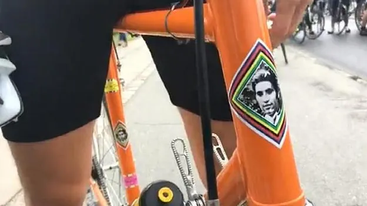

Medieløbet Næstved: Hvor fanden er servicevognen?

På trods af en ellers velpolstret løbskalender havde Squadra Molteni i sidste øjeblik fulgt opfordringen fra regionens store medier – TV Øst, DR P4 Sjælland, Sjællandske Medier og Folketidende – om at stille op til Medieløbet; med start og mål i Næstved. En sikker sejr var inden for rækkevidde, men …
Det klassiske interview med borgmesteren kørende på en Everton med bagagebærer skulle gerne suppleres af noget mere cool – mere potent – men fortsat med lokal dialekt.
– Heldigvis kunne holdet stille med Kristian Blume, der ikke var sendt på træningslejr med resten af holdet forud for næste lørdags nyklassiker Trofeo Molteni, der i år køres ved Mesinge på Fyn”, udtaler sportsdirektør Niels Bjørnsteen.
Mens borgmesteren pænt måtte vente (sammen med en flaske Gammel Dansk), gik journalisten straks i kødet på løbets bedste optaktshistorie – nemlig den om Eddy! Se artikel her.

Der var ikke spildt ressourcer på Masterstart og Marshalls på 55 km ruten, så der blev kørt cykelløb fra starten. En gruppe på 20 mand ud af de ca. 300 m/k lagde straks fra land og Torben Lund fra Næstved Cykel-Motion satte tempo helt forrest med den orange Eddy Merckx Colnago på hjul. Torben og Kristian tog de første 20 km det meste af vinden kun.
Hvor er følgebilen?
Afbrudt af sporadiske føringer fra gratisterne. Ved passagen af Slagelse-landevejen var benene blevet varme og tempoet blev skruet op til det der svarer til 3 mand i front og resten tabt. Det så rigtig godt ud!
– Helt ærligt sad jeg og tænkte på det ryk der skulle sættes ind på Menstrup Bjerg og den efterfølgende solokørsel mod mål, da cyklen pludselig føltes helt komfortabel, fortæller Kristian efter løbet.
De 10 bar i den lukkede bagring var tydeligvis reduceret til det halve og hastigt på vej mod 0 bar. OG DER VAR INGEN FØLGEBIL! Goodbye udbrud!
– Der røg så anledningen til (legalt) at kramme med podiepigerne, fortæller en noget slukøret Kristian, der dog kunne glæde sig over, at Frank Høj viste sig at være den lækreste af podiepigerne.
Tak til DGI Storstrømmen for et godt arrangeret løb. Lidt mindre flint på vejene ville være fint – kaffen og kagen var topklasse.